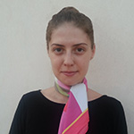

Mariya Golovacheva
Marketing / PR / Content Writer
-
Nationality: Russian

- Country of residence: Bahrain
- Phone: +973 3686 7377
- Mail: mariya.golovacheva@gmail.com
Business experience
April 2011 till present
-
SADAD Electronic Payment System WLL
Software development company focused on payment processing
Marketing Manager
- Conduct market analysis to implement a novel payment method on the Bahrain market (the adequate assessment of the market situation has led to the growth of SADAD users by approximately 15% monthly).
- Write business proposals and prepare presentations to various service providers in Bahrain (banks, airlines, telecom companies, government bodies), initiate contacts with them, bringing home the benefits of SADAD solution. These efforts have resulted in adding electricity and water bill payments to SADAD network and signing agreements with the major Internet provider and the leading Indian bank in Bahrain.
- Responsible for daily communication with current SADAD partners, in particular elaborating joint marketing plans, promotional campaigns and coordinating press releases.
- Responsible for creating and updating content on SADAD website.
- Perform several HR duties in particular in the field of recruitment, i.e. screening, shortlisting and interviewing potential candidates.
Aug 2010 to Apr 2011
-
Chadbourne & Parke, Moscow, Russia
Law firm
Part-time administrative assistant
Part-time job to combine with my PhD studies
- I was responsible for a range of administrative duties, in particular answering and forwarding telephone calls, writing introductory and follow-up e-mails, clearing up general enquiries, ordering stationery, arranging meetings, assisting legal secretaries with proofreading the documents.
Jan 2010 to June 2010
-
Civil forces, Moscow, Russia
NGO
Assistant Manager - internship
- Maintained a wide network of contacts with mass media and informed them of the organization’s projects and their implementation.
- Implemented and oversaw an ecological project launched by Civil forces. In less than 2 months, this project became the second most popular in the organization.
- Wrote press releases on the organization’s events.
Education
2010-2011
- Moscow Institute of Oriental Studies, Moscow, Russia
- History of the Middle East
- Currently suspended
2005-2010
- Moscow State University, Moscow, Russia
- MSc International Relations
- High Distinction (top 3%)
- Diploma with Honours
Additional information
Exams and certificates
- Attended graduate-level courses in European law at French University College in Moscow, Russia
- Passed IELTS – score: 8,5 (2009), FCE (First Certificate in English) – score: A (2005)
- Successfully passed DALF (French equivalent of the English proficiency test TOEFL) – 2007
- Successfully completed "Web fundamentals" course on Codecademy
Awards and competitions
- Won Government Fellowship for the research on Energy companies in Russia and the USA - awarded $4,000
- The best research paper in the Department of Regional studies at the University: “Religious and ethnic opposition in Algeria and Morocco in the 2000s”
- High School: Regional Competition in History– 1st place, English Language – 2nd place
Other
- Competent in MS Office: MS Word, PowerPoint, Excel, Outlook
- Basic HTML and CSS knowledge + Photoshop
- Volunteered and raised funding for terminally ill children in Russia
- Interests: chess, Arabic culture and language, learning to code
Languages
- Fluent English
- Native Russian
- Competent French
- Basic Arabic